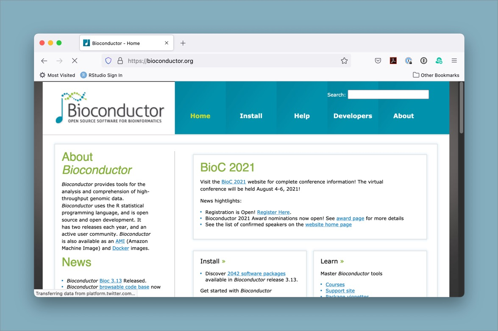
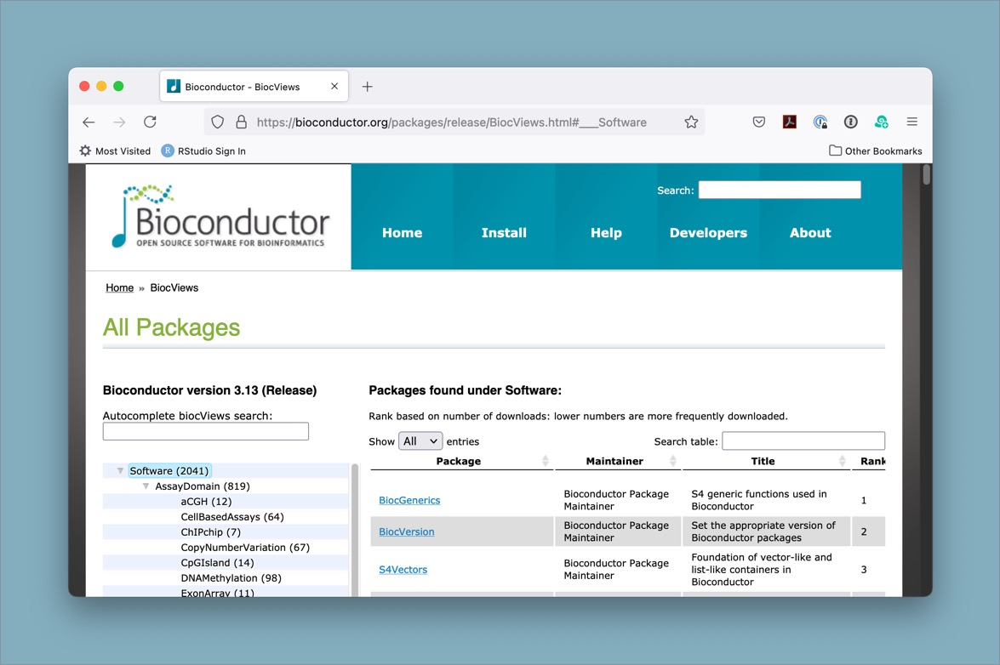

# install the BiocManager from CRAN using the base R install.packages() function
install.packages("BiocManager")Using packages from Bioconductor
- Describe what the Bioconductor repository is and what it is used for
- Describe how Bioconductor differs from CRAN
- Search Bioconductor for relevant packages
- Install a package from Bioconductor
- How do I use packages from the Bioconductor repository?
Installing packages from somewhere else besides CRAN?
So far we have told you about using packages that are included in the base installation of R (this is what comes with R ‘out of the box’), and packages that you can install from CRAN (the Comprehensive R Archive Network), which is the primary place many people look for supplemental R packages to install. However, not all R packages are available on CRAN. For bioinformatics-related packages in particular, there is another repository that has many powerful packages that you can install. It is called Bioconductor and it is a repository specifically focused on bioinformatics packages. Bioconductor has a mission of “promot[ing] the statistical analysis and comprehension of current and emerging high-throughput biological assays.” This means that many if not all of the packages available on Bioconductor are focused on the analysis of biological data, and that it can be a great place to look for tools to help you analyze your -omics datasets!
So how do I use it?
Since access to the Bioconductor repository is not built in to base R ‘out of the box’, there are a couple steps needed to install packages from this alternative source. We will work through the steps (only 2!) to install a package to help with the VCF analysis we are working on, but you can use the same approach to install any of the many thousands of available packages.

First, install the BiocManager package
The first step is to install a package that is on CRAN, BiocManager. This package will allow us to use it to install packages from Bioconductor. You can think of Bioconductor kind of like an alternative app store for your phone, except instead of apps you are installing packages, and instead of your phone it’s your local R package library.
To check if this worked (and also so you can make a note of the version for reproducibility purposes), you can run BiocManager::version() and it should give you the version number.
# to make sure it worked, check the version
BiocManager::version()Second, install the vcfR package from Bioconductor using BiocManager
# install the vcfR package from bioconductor using BiocManager::install()
BiocManager::install("vcfR")Depending on your particular system, you may need to also allow it to install some dependencies or update installed packages in order to successfully complete the process.
Search for Bioconductor packages based on your analysis needs
While we are only focusing in this workshop on VCF analyses, there are hundreds or thousands of different types of data and analyses that bioinformaticians may want to work with. Sometimes you may get a new dataset and not know exactly where to start with analyzing or visualizing it. The Bioconductor package search view can be a great way to browse through the packages that are available.

In bioinformatics, there are often many different tools that can be used in a particular instance. The authors of vcfR have compiled some of them. One of those packages that is available from Bioconductor is called VariantAnnotation and may also be of interest to those working with vcf files in R.
Challenge
- Use the
BiocManager::available()function to see what packages are available matching a search term. - Use the biocViews interface to search for packages of interest.
You may or may not want to try installing the package, since not all dependencies always install easily. However, this will at least let you see what is available.
Resources
- Bioconductor is an alternative package repository for bioinformatics packages.
- Installing packages from Bioconductor requires a new method, since it is not compatible with the
install.packages()function used for CRAN. - Check Bioconductor to see if there is a package relevant to your analysis before writing code yourself.